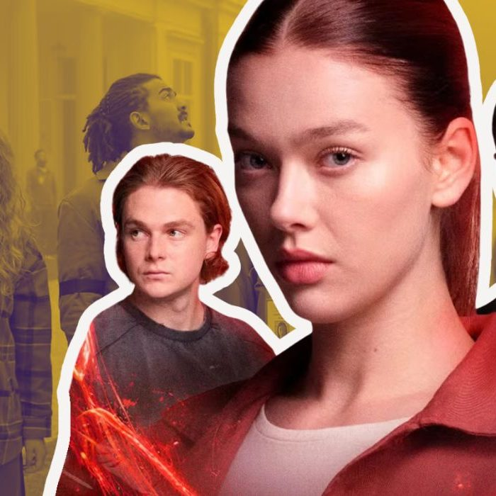

Westwold
Westworld é um parque temático futurístico para adultos, dedicado à diversão dos ricos. Um espaço que reproduz o Velho Oeste, povoado por androides – os anfitriões –, programados pelo diretor executivo do parque, o Dr. Robert Ford (Anthony Hopkins), para acreditarem que são humanos e vivem no mundo real. Lá, os clientes – ou novatos – podem fazer o que quiserem, sem obedecer a regras ou leis. No entanto, quando uma atualização no sistema das máquinas dá errado, os seus comportamentos começam a sugerir uma nova ameaça, à medida que a consciência artificial dá origem à "evolução do pecado".
Ler mais

Um Conto de Fadas Perfeito
Em Um Conto de Fadas Perfeito, uma herdeira que está a momentos de subir ao altar coloca tudo a perder, mas acaba achando o amor verdadeiro onde menos esperava. Na série baseada no romance da escritora espanhola Elísabet Benavent, Margot (Ana Castillo) tem tudo certo e encaminhado na vida, com casamento marcado com o pretendente perfeito e a herança de um império de hotéis de luxo, mas algo não está certo. Em um rompante, ela decide fugir do próprio casamento e assumir os riscos da sua vida. O destino faz com que seu caminho cruze com o de David (Álvaro Mel), um jovem trabalhador cuja vida é completamente diferente da dela.
Ler mais

Fallen - Luz e Sombra
Baseada na série de livros escrita por Lauren Kate, Fallen narra a história da adolescente Luce (Jessica Alexander) que, após a morte do namorado em um incêndio misterioso, é mandada para um reformatório chamado Sword & Cross. Luce não consegue lembrar o que aconteceu e acredita que as sombras que a atormentam desde criança são as verdadeiras culpadas pelo terrível acidente. Na nova escola ela conhece outros moradores cheios de mistérios, entre eles Daniel (Gijs Blom) e o irresistível Cam (Timothy Innes). Os residentes estão sob supervisão do sinistro médico-chefe Howson (Alexander Siddig) e das irmãs gêmeas Miriam (Sarah Niles) e Sophia. Se sentindo injustiçada e aparentemente sem saída, Luce procura desvendar o mistério por trás de sua origem e a conexão que sente pelo jovem Daniel, que parece ir além de seu tempo na instituição.
Ler mais